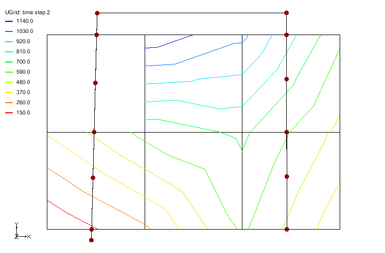

Extractor Tutorial
Introduction
The purpose of this tutorial is to provide explanation on how to use the classes defined in xmsextractor to extract data at given locations on an XmUGrid with scalar values. The examples provided in this tutorial refer to test cases that are in the xmsextractor/extractor/XmUGrid2dDataExtractor.cpp and xmsextractor/extractor/XmUGrid2dPolylineDataExtractor.cpp source files.
Example - Simple Location Extractor
This is the "hello world" example for using the extractor library.
This first example shows how to extract data from a simple XmUGrid. The testing code for this example is in XmUGrid2dDataExtractorUnitTests::testCellScalarsOnly. A picture of the example is shown below. Notice that the UGrid is a simple square from (0,0) to (1,1) split into two triangle cells. The scalar data is mapped to the cells.
Simple XmUGrid with 2 Triangle Cells
The basic steps to extract interpolated locations from an XmUGrid and scalar values is as follows:
- Create an extractor for an existing XmUGrid (call xms::XmUGrid2dDataExtractor::New).
- Set scalar and activity values (call xms::XmUGrid2dDataExtractor::SetGridCellScalars or XmUGrid2dDataExtractor::SetPointCellScalars).
- Set extract locations (call xms::XmUGrid2dDataExtractor::SetExtractLocations).
- Extract the data (call xms::XmUGrid2dDataExtractor::ExtractData). Values that are outside of the UGrid are returned as XM_NODATA by default. The value for no data can be set using xms::XmUGrid2dDataExtractor::SetNoDataValue.
{
VecPt3d points = {{0, 0, 0}, {1, 0, 0}, {1, 1, 0}, {0, 1, 0}};
VecInt cells = {XMU_TRIANGLE, 3, 0, 1, 2, XMU_TRIANGLE, 3, 2, 3, 0};
BSHP<XmUGrid> ugrid = XmUGrid::New(points, cells);
BSHP<XmUGrid2dDataExtractor> extractor = XmUGrid2dDataExtractor::New(ugrid);
TS_ASSERT(extractor);
VecFlt cellScalars = {1, 2};
extractor->SetGridCellScalars(cellScalars, DynBitset(), LOC_CELLS);
extractor->SetExtractLocations({{0.0, 0.0, 0.0},
{0.25, 0.75, 100.0},
{0.5, 0.5, 0.0},
{0.75, 0.25, -100.0},
{-0.1, -0.1, 0.0}});
VecFlt interpValues;
extractor->ExtractData(interpValues);
VecFlt expected = {1.5, 2.0, 1.5, 1.0, XM_NODATA};
TS_ASSERT_EQUALS(expected, interpValues);
}
Example - Transient Location Extractor
This example shows how to use a location extractor on transient data.
This example shows how to extract data from a XmUGrid that has transient scalar data. The testing code for this example is in XmUGrid2dDataExtractorUnitTests::testTutorial. A picture of the example is shown below. Notice that the UGrid is a 2x3 structured grid with quadrillateral cells. There are two time steps with scalar data mapped to the points.
XmUGrid With Extract Locations - Time Step 1
XmUGrid With Extract Locations - Time Step 2
The steps to extract interpolated locations for transient scalar values include:
- Create an extractor for an XmUGrid (call xms::XmUGrid2dDataExtractor::New).
- Set extract locations (call xms::XmUGrid2dDataExtractor::SetExtractLocations).
- Optionally set the "no data" value for output interpolated values (xms::XmUGrid2dDataExtractor::SetNoDataValue).
- Set the point scalars for the first time step (xms::XmUGrid2dDataExtractor::SetGridPointScalars).
- Extract the data (call xms::XmUGrid2dDataExtractor::ExtractData).
- Continue using steps 4 and 5 for remaining time steps.
{
VecPt3d points = {
{288050, 3907770, 0}, {294050, 3907770, 0}, {300050, 3907770, 0},
{306050, 3907770, 0}, {288050, 3901770, 0}, {294050, 3901770, 0},
{300050, 3901770, 0}, {306050, 3901770, 0}, {288050, 3895770, 0},
{294050, 3895770, 0}, {300050, 3895770, 0}, {306050, 3895770, 0}
};
VecInt cells = {
XMU_QUAD, 4, 0, 4, 5, 1,
XMU_QUAD, 4, 1, 5, 6, 2,
XMU_QUAD, 4, 2, 6, 7, 3,
XMU_QUAD, 4, 4, 8, 9, 5,
XMU_QUAD, 4, 5, 9, 10, 6,
XMU_QUAD, 4, 6, 10, 11, 7
};
BSHP<XmUGrid> ugrid = XmUGrid::New(points, cells);
BSHP<XmUGrid2dDataExtractor> extractor = XmUGrid2dDataExtractor::New(ugrid);
VecPt3d extractLocations = {
{289780, 3906220, 0},
{293780, 3899460, 0},
{298900, 3900780, 0},
{301170, 3904960, 0},
{296330, 3906180, 0},
{307395, 3901463, 0}
};
extractor->SetExtractLocations(extractLocations);
VecFlt extractedData;
VecPt3d retrievedLocations = extractor->GetExtractLocations();
TS_ASSERT_EQUALS(extractLocations, retrievedLocations);
extractor->SetNoDataValue(-999.0);
VecFlt pointScalars = {730.787f, 1214.54f, 1057.145f, 629.2069f, 351.1153f, 631.6649f, 1244.366f,
449.9133f, 64.04247f, 240.9716f, 680.0491f, 294.9547f};
extractor->SetGridPointScalars(pointScalars, DynBitset(), LOC_CELLS);
extractor->ExtractData(extractedData);
VecFlt expectedData = {719.6f, 468.6f, 1033.8f, 996.5f, 1204.3f, -999.0f};
TS_ASSERT_DELTA_VEC(expectedData, extractedData, 0.2);
pointScalars = {-999.0f, 1220.5f, 1057.1f, 613.2f, 380.1f, 625.6f, 722.2f, 449.9f, 51.0f, 240.9f, 609.0f, 294.9f};
DynBitset cellActivity;
cellActivity.resize(ugrid->GetCellCount(), true);
cellActivity[0] = false;
extractor->SetGridPointScalars(pointScalars, cellActivity, LOC_CELLS);
extractor->ExtractData(extractedData);
expectedData = {-999.0f, 466.4f, 685.0f, 849.4f, 1069.6f, -999.0f};
TS_ASSERT_DELTA_VEC(expectedData, extractedData, 0.2);
}
Example - Transient Polyline Extractor
This example shows how to use a polyline extractor on transient data.
This example shows how to extract data along a polyline from a XmUGrid that has transient scalar data. The testing code for this example is in XmUGrid2dPolylineDataExtractorUnitTests::testTransientTutorial. A picture of the example is shown below. Notice that the UGrid is a 2x3 structured grid with quadrillateral cells. There are two time steps with scalar data mapped to the points.
XmUGrid With Extract Polyline - Time Step 1
The steps to extract interpolated values along a polyline for transient scalar values include:
- Create an extractor for an XmUGrid giving the mapped location of the scalar values (call xms::XmUGrid2dPolylineDataExtractor::New).
- Optionally set the "no data" value. (call xms::XmUGrid2dPolylineDataExtractor::SetNoDataValue).
- Set the polyline to be extracted along (call xms::XmUGrid2dPolylineDataExtractor::SetPolyline).
- Optionally get the locations used for extraction along the polyline (call xms::XmUGrid2dPolylineDataExtractor::GetExtractLocations).
- Set the point scalars for the first time step (call xms::XmUGrid2dPolylineDataExtractor::SetGridScalars).
- Extract the data (call xms::XmUGrid2dPolylineDataExtractor::ExtractData)
- Continue using steps 5 and 6 for remaining time steps.
{
VecPt3d points = {
{288050, 3907770, 0}, {294050, 3907770, 0}, {300050, 3907770, 0},
{306050, 3907770, 0}, {288050, 3901770, 0}, {294050, 3901770, 0},
{300050, 3901770, 0}, {306050, 3901770, 0}, {288050, 3895770, 0},
{294050, 3895770, 0}, {300050, 3895770, 0}, {306050, 3895770, 0}
};
VecInt cells = {
XMU_QUAD, 4, 0, 4, 5, 1,
XMU_QUAD, 4, 1, 5, 6, 2,
XMU_QUAD, 4, 2, 6, 7, 3,
XMU_QUAD, 4, 4, 8, 9, 5,
XMU_QUAD, 4, 5, 9, 10, 6,
XMU_QUAD, 4, 6, 10, 11, 7
};
BSHP<XmUGrid> ugrid = XmUGrid::New(points, cells);
BSHP<XmUGrid2dPolylineDataExtractor> extractor = XmUGrid2dPolylineDataExtractor::New(ugrid, LOC_POINTS);
extractor->SetNoDataValue(-999.0);
VecPt3d extractedLocations;
VecPt3d polyline = {
{290764, 3895106, 0}, {291122, 3909108, 0},
{302772, 3909130, 0}, {302794, 3895775, 0}
};
extractor->SetPolyline(polyline);
extractedLocations = extractor->GetExtractLocations();
VecPt3d expectedLocations = {
{290764.0, 3895106.0, 0.0},
{290780.9, 3895770.0, 0.0},
{290862.4, 3898957.5, 0.0},
{290934.3, 3901770.0, 0.0},
{291012.0, 3904807.9, 0.0},
{291087.7, 3907770.0, 0.0},
{291122.0, 3909108.0, 0.0},
{302772.0, 3909130.0, 0.0},
{302774.2, 3907770.0, 0.0},
{302778.7, 3905041.2, 0.0},
{302784.1, 3901770.0, 0.0},
{302788.6, 3899031.3, 0.0},
{302794.0, 3895775.0, 0.0},
};
TS_ASSERT_DELTA_VECPT3D(expectedLocations, extractedLocations, 0.15);
VecFlt extractedData;
VecFlt pointScalars = {
730.787f, 1214.54f, 1057.145f, 629.2069f, 351.1153f, 631.6649f,
1244.366f, 449.9133f, 64.04247f, 240.9716f, 680.0491f, 294.9547f
};
extractor->SetGridScalars(pointScalars, DynBitset(), LOC_CELLS);
extractor->ExtractData(extractedData);
VecFlt expectedData = {-999.0f, 144.5f, 299.4f, 485.9f, 681.8f,
975.7f, -999.0f, -999.0f, 862.8f, 780.9f,
882.3f, 811.0f, 504.4f};
TS_ASSERT_DELTA_VEC(expectedData, extractedData, 0.2);
pointScalars = {-999.0f, 1220.5f, 1057.1f, 613.2f, 380.1f, 625.6f, 722.2f, 449.9f, 51.0f, 240.9f,
609.0f, 294.9f};
extractor->SetGridScalars(pointScalars, DynBitset(), LOC_CELLS);
extractor->ExtractData(extractedData);
expectedData = {-999.0f, 137.4f, 314.8f, 498.1f, -196.9f, 124.7f, -999.0f, -999.0f, 855.5f,
780.9f, 598.1f, 527.1f, 465.4f};
TS_ASSERT_DELTA_VEC(expectedData, extractedData, 0.2);
}

XmUGrid With Extract Locations Along Polyline - Time Step 2
 1.8.13
1.8.13